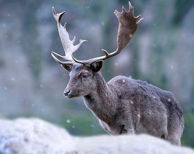
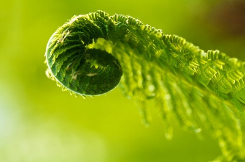
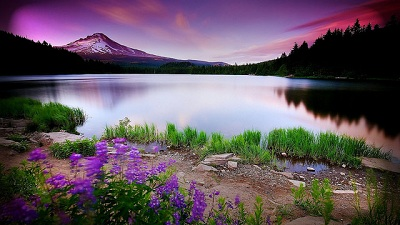
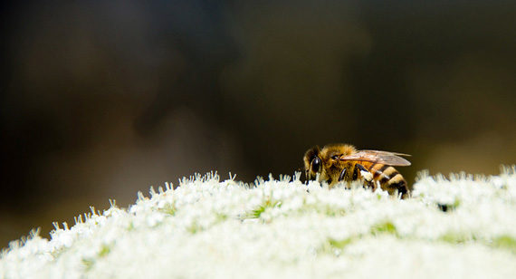

Nature Photography
Nature photography refers to a wide range of photography taken outdoors and devoted to displaying natural elements such as landscapes, wildlife, plants, and close-ups of natural scenes and textures. Nature photography tends to put a stronger emphasis on the aesthetic value of the photo than other photography genres, such as photojournalism and documentary photography.
"Nature photography" overlaps the fields of -- and is sometimes considered an overarching category including -- "wildlife photography," "landscape photography," and "garden photography."
How To Take Photos In Nature Photography

Whether you’re taking a picture of a geranium in your backyard garden or a grizzly bear in the Rocky Mountains, capturing a great photo outdoors means working with Mother Nature, and not trying to impose
your photographic will upon her.So many factors come into play when taking a nature photograph—sun, clouds, wind, rain, sleet or snow—and if you’re photographing animals in their native habitat, you’ve
got noise, odors, and movement to deal with.It can get complex, but the enjoyment you’ll get by taking nature photography seriously will far outweigh the extra time and effort you put into it. Rather than just
clicking a snapshot of your sugar maple in all its fall glory, you’ll have a photo you’d be proud to hang on your wall as a piece of art. Or, you might even become so good that you’ll find yourself selling some of
your better photos.After all, everyone loves a great nature photo. It’s easy for viewers to put themselves into the picture. Even if they’ve never been to the mountains, people enjoy looking at pictures of
mountains because it transports them, at least for a brief moment, to a peaceful place.So in order to help you get the most out of the time you spend outdoors with your camera, here are five fundamental tips
for taking better nature photos. As a photographer, I’ve learned that if you approach your outdoor photography with the right mindset, you’re certain to succeed, oftentimes in ways you never expected.
Understand the nature of nature. There’s an old saying, “You can’t fight Mother Nature.” Plan on working with the elements of the natural environment you photograph. A backyard squirrel might not blink at the sound of your shutter. But a rarely seen black squirrel sitting in the woods 50 miles from the nearest road might run upon hearing the same click.Animals, trees, bushes, grass—everything associated with nature functions uniquely in different weather conditions. If you’re looking for a “money” shot, you need to understand the conditions you’re working in, and the subject matter you are photographing.

Be prepared. Study the area you plan on photographing, even if it’s your own backyard. Watch how the light plays on your flowers at different times of the day, and under different cloud conditions. Pay attention to the patterns of birds. Animals are creatures of habit, and weather and light is somewhat predictable.The same goes if you plan on venturing out into the wilderness. Get familiar with the local surroundings by talking to locals, watching weather reports on the Internet or TV, and by just taking some time to familiarize yourself with your surroundings.
Know your equipment. If you’re trying to get a close up shot of a deer in the wild, even if you’re using a telephoto lens, turn off your autofocus, autoflash, and motordrive. Get to know your camera settings, from the f-stop and shutter speed to the ISO settings.
Experiment at home and in the field. After buying a new camera, I like to take a number of shots just around the house, in a variety of conditions. Spend about an hour or so walking around your home and yard, instruction manual in hand, and try out all the features. Use different exposures and settings. Do this as a refresher from time to time as well. It’s worth the effort.
Be patient. Natural events happen when they happen. You’re not going to rush that beaver out of his watery den any faster. The perfect glint of sunlight playing off your prize rose bushes will not happen any sooner or later than you want it to. Keep your camera at the ready, and don’t force the shot. You may arrive five minutes too late for a great shot, but you may be five minutes early for the perfect shot.

Have an outcome in mind, but be ready for the unexpected. If you go out looking for cardinals in the forest, you’re likely to find some. So be ready by having a telephoto lens, a tripod if necessary, perhaps a birding book to help with recognition, and something comfortable to sit on. Take food for yourself—don’t feed the animals!—and water. Picture the shot you want in your mind’s eye. You’ll often get something close.But don’t close your mind to other possibilities. The sun may be absolutely perfect at that time of day, and you could get a stunning picture of rays of sunlight piercing the forest canopy. Ansel Adams’ famous “Moonrise over Hernandez” was taken while he was driving down a highway. He stopped the car, jumped out, grabbed his camera, took one shot … and nailed it because he was ready for the unexpected.
